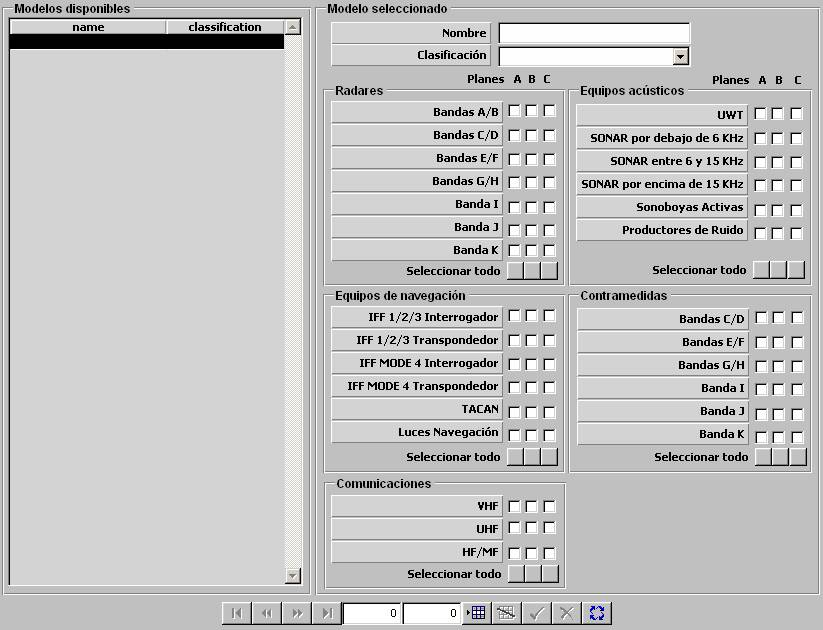

Planes EMCOM

Mediante la tabla de Plan EMCOM, se especifican las frecuencias en la que pueden ser radiadas durante el Ejercicio, en función del plan activo en cada momento (A, B o C).
Si un selector es activado, se considera que la banda o equipo de la fila correspondiente puede ser empleado en el plan de la columna correspondiente (A, B o C). Se distinguen los siguientes tipos de equipos y bandas de frecuencia:
Radares:
Bandas C/D Bandas E/F Bandas G/H Banda I Banda J Banda K |
Equipos Acústicos:
SONAR por debajo de 6 KHz SONAR entre 6 y 15 KHz SONAR por encima de 15 KHz Sonoboyas Activas Productores de Ruido |
Equipos de Navegación:
IFF 1/2/3 Transpondedor IFF MODE 4 Interrogador IFF MODE 4 Transpondedor TACAN Luces Navegación |
Contramedidas:
Bandas E/F Bandas G/H Banda I Banda J Banda K |
Comunicaciones:
VHF HF/MF |
|